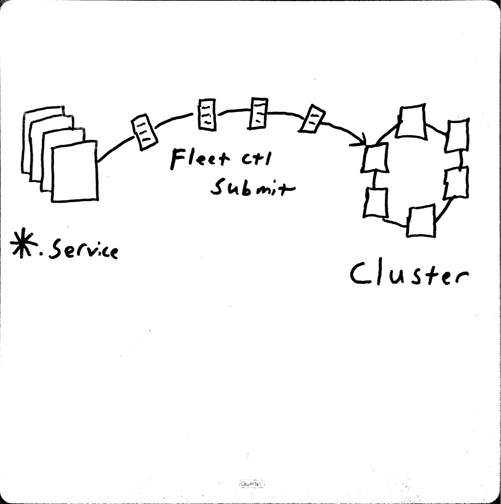
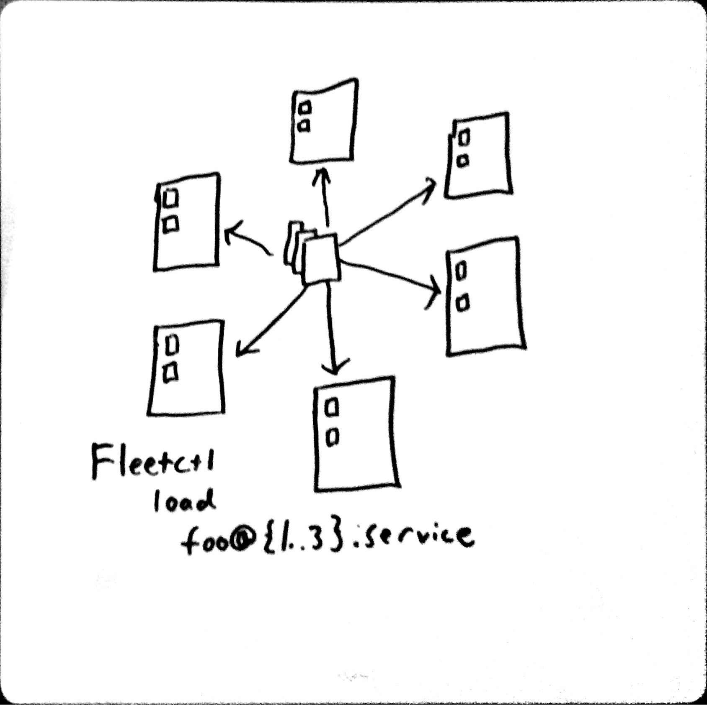
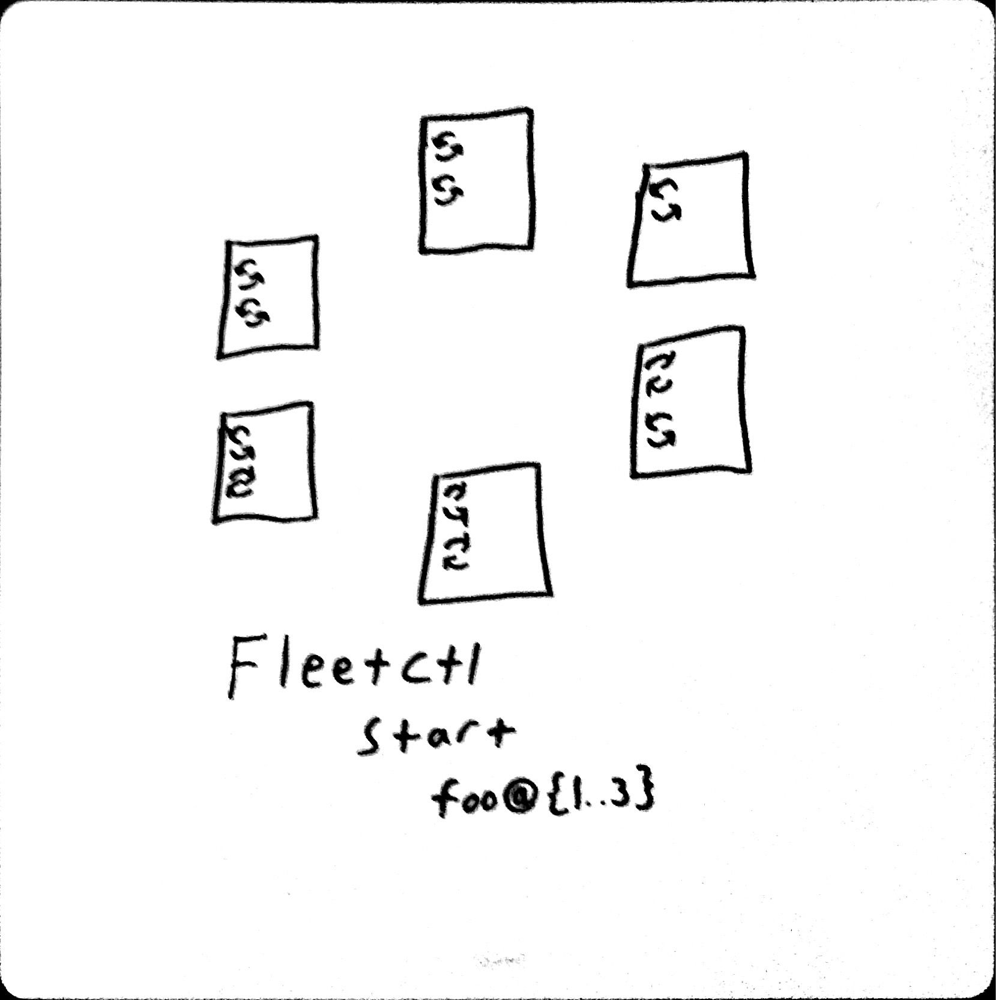

Who Am I
- Arcitecht/Developer uHub
- Worked with Docker on Previous Projects
- Used Docker in CI/CD Pipeline
- Used Docker in Development Env
Disclaimer
Docker is a new technology and because of this both Docker and the container landscape is changing rapidly. Everything I am presenting to you right now, could already be out of date.Microservice Requirements
- Rapid Provisioning Microservices Prerequisites(Fowler)
- Basic Monitoring Microservices Prerequisites(Fowler)
- Rapid Deployment Microservices Prerequisites(Fowler)
- Fault Tolerance
Legos


What is Docker
- Docker Engine
- Run Docker Containers
- Build Docker Containers
- Docker Hub
- Store Docker Containers
- Share Docker Containers
- Docker Machine
- Install Docker Engine on hosts
- Docker Compose
- Define and compose multiple containers
- Single host
- Docker Swarm
- Define and compose multiple containers
- Multiple hosts
CoreOS Cluster Architectures (small)
Up to 9 Nodes
CoreOS Cluster Architectures (large)

Legos?
I Submit the Pods
I load the Pods
I Start the Pods
Thank you
Git Hub Repo for Presentation - https://github.com/zombiepossum/docker-coreos-presentation
My Fork of CoreOS Vagrant - - https://github.com/jmuraski/coreos-vagrant